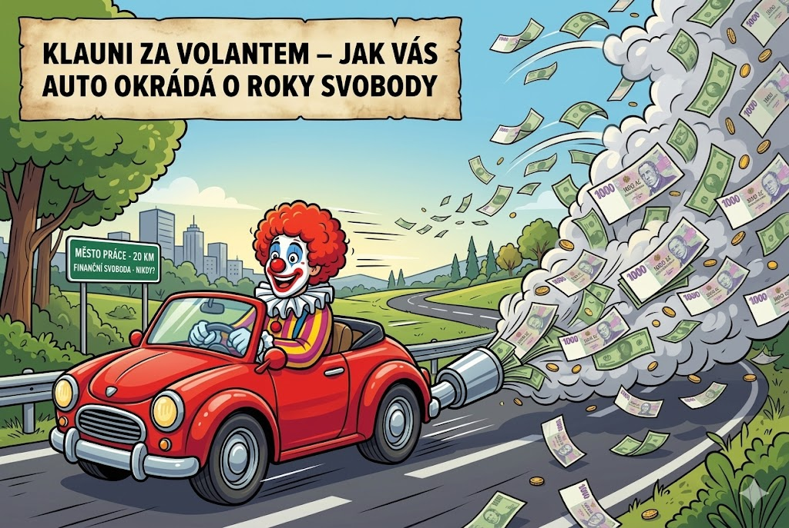

Klauni za volantem - Jak vás auto okrádá o roky svobody
Tento článek je druhý díl v sérii Moudrost Mr. Money Mustache, ve které stručně shrnuju myšlenky Peta Adeney. Pokud by Vás zaujaly, neváhejte navštívit jeho blog.
Jestli je něco základním stavebním kamenem filosofie Mr. Money Mustache, pak je to přesvědčení, že auto je největším požíračem našich financí (a našeho zdraví). Auto je prostředek sloužící k občasné přepravě na dlouhé vzdálenosti (mezi městy). Rozhodně neslouží k ježdění do obchodu, s dětmi do školy a na kroužky nebo do práce.

Práce v místě bydliště - nebo bydlení v místě práce
Pokud bydlíte hodinu cesty od svého zaměstnání, pracujete kvůli dojíždění reálně každý týden o den navíc (5 dní x 2 cesty x 1 hodina = 10 hodin). Každý ujetý kilometr vás navíc stojí spoustu peněz za benzín, pneu, olej, servis. Nemluvě o opotřebení samotného auta a riziku bouračky. Opravdu se vyplatí vybírat bydleni v blízkosti prace, a pokud je pro vás nedostupné, přizpůsobit i výběr práce samotné.
Chodit do práce pěšky nebo jezdit na kole je skvělé nejen pro vaši peněženku, ale i pro vaše zdraví. V době sedavých zaměstnání je trávení času za volantem to poslední, co potřebujete.
Nabízí se také MHD, kdy sice odpadá fyzická aktivita, ale oproti dopravě autem máte alespoň možnost strávit čas užitečným způsobem - prací, vzděláváním se, apod.
V dnešní době má spousta profesí možnost pracovat formou home office, což je samozřejmě také velmi užitečné.
Vhodné auto
Auto je prostředek, který nám umožňuje přemisťovat se z místa na místo - nic víc, nic míň. Při koupi se nenechte unést marketingem a nepřiplácejte za prestiž, nebo za funkcionalitu, kterou nepotřebujete. Krome pořizovací ceny je nejdůležitějším parametrem efektivita (kolik paliva spotřebujete na kilometr jizdy).
Zdroje: